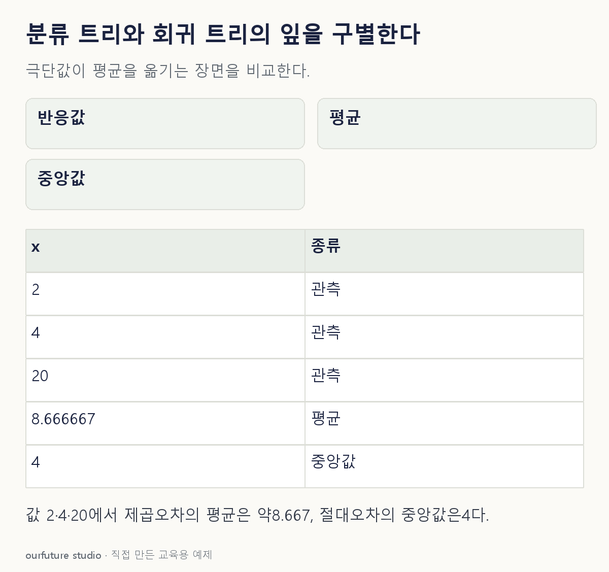

핵심 이론
분류 트리는 범주를, 회귀 트리는 수치를 예측한다. 분류 잎에서 학습 표본의 클래스 비율을 확률로 삼고 그중 큰 클래스를 선택할 수 있다. 회귀 잎은 하나의 수치를 내지만 그 수치를 정하는 방식은 손실에 따라 달라진다. 트리는 항상 다수결한다는 설명은 회귀를 빠뜨린다.
제곱오차를 쓰는 회귀 트리는 잎에 배정된 반응값의 평균을 예측한다. 고정된 잎 안에서 평균은 제곱오차 합을 최소화한다. 절대오차를 쓰면 중앙값이 최소화점이 된다. 평균과 중앙값이 우연히 같을 때도 있으므로 기준을 생략하고 숫자 하나만 외우면 조건 변경에 취약하다.
분할도 이 목적에 맞추어 비교한다. 분류에서는 클래스 혼합을 줄이는 기준을, 회귀에서는 자식 안의 수치 오차 감소를 쓸 수 있다. 같은 모양의 트리라도 목표와 기준이 다르면 평가 계산이 달라진다. 아래 값은 이미 한 잎에 배정되었다고 가정하며 그 배정이 최적이라는 주장은 하지 않는다.
작은 예제로 확인하기
한 회귀 잎의 y가 2·4·6이다. 제곱오차 기준이면 평균 4를 사용한다.
| 예측 | 제곱오차 합 |
|---|---|
| 2 | 0+4+16=20 |
| 4 | 4+0+4=8 |
| 6 | 16+4+0=20 |
잎의 4는 범주 코드가 아니라 수치 예측이다. 이 예제에서는 중앙값도 4지만 일반적으로 평균과 중앙값이 같은 것은 아니다.
그림으로 확인하기

직접 고르기
회귀 트리의 한 잎에 반응값 2·4·6이 있다. 제곱오차 기준이다.
이 잎의 예측값과 제곱오차 합은?
- 1. 4, 8
- 2. 4, 0
- 3. 2, 8
- 4. 6, 20
정답과 오답의 이유 확인하기
정답 1번 — 4, 8
평균 (2+4+6)/3=4이고, (2−4)²+(4−4)²+(6−4)²=8이다.
- 2번: 평균을 예측해도 서로 다른 실제 값의 잔차가 모두 0이 되지는 않는다.
- 3번: 최소제곱 잎 예측은 최소값 2가 아니라 평균이다.
- 4번: 6에서의 제곱오차는 20이지만 기준을 최소화하지 못한다.
조건 하나 바꾸어 풀기
같은 잎의 값이 2·4·20이고 절대오차 기준으로 바꾸면 잎의 예측값은?
풀이: 중앙값 4.
절대오차 합은 2+0+16=18이다. 평균 26/3은 제곱오차의 기준이며 여기서는 목표가 달라졌다.
다시 떠올릴 단서
수치 잎은 손실을 확인한다: 제곱은 평균.
근거와 적용 조건
- scikit-learn Decision Trees — 1.10.7.2 Regression criteria: MSE의 평균과 MAE의 중앙값. 확인일 2026-10-30.
상황·수치·보기·조건 변경은 자체 교육 예제다. 민간 복원 문항의 공식 정답이나 실제 성능·학습 효과를 뜻하지 않는다.
읽은 내용을 적용해 보기
이미 한 잎에 배정된 반응값이다. 군집이나 최적 트리 구조를 적합하지 않는다. 그림은 조건 변경의 값2·4·20에서 평균 약8.667과 중앙값4를 비교한다. 체험 기본값은2·4·6이고, 입력이나 손실을 바꾸어도 이 고정 그림은 갱신되지 않는다.